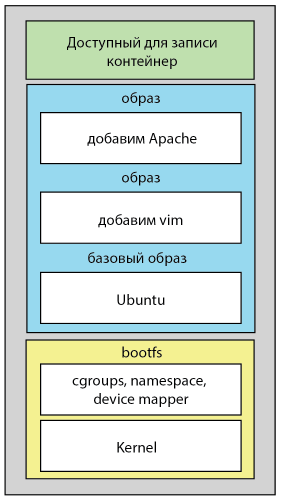

Непрерывная поставка (Continuous Delivery) — это подход к разработке программного обеспечения, при котором все изменения, включая новые функции, изменения конфигурации, исправления ошибок и эксперименты, поставляются пользователям максимально быстро и безопасно
Любой, кто обладает достаточными привилегиями для развертывания нового релиза может выполнить развертывание в любой момент, и это можно сделать в несколько кликов
Программист, избавившись практически от всей ручной работы, трудится продуктивнее
Continuous delivery
Разработчик отправляет свои изменения в систему контроля версии
На сервере сборки начинается процесс сборки поступивших изменений
Запускаются юнит-тесты
Собранный пакет после успешной интеграции выкладывается на тестовый сервер
Заинтересованные лица получают уведомления о выкладке новой версии ПО на тестовую площадку. Начинается вторая фаза тестирования, запускаются интеграционные, ручные, приемочные, UI тесты и тд
После успешного прохождения предыдущих шагов мы имеем готовый к публикации пакет новой версии ПО
Continuous delivery
Очень важно отметить, что на протяжении всего процесса непрерывной доставки команда постоянно получает обратную связь
Непрерывная поставка позволяет нам снизить риски релизов, делая развертывание программного обеспечения безболезненным, безопасным событием, которое может быть выполнено в любое время
Автоматизируя большинство операций, таких как развертывание, настройки окружения, тестирование, мы сокращаем время поставки новой функциональности
Continuous deployment
Непрерывное развертывание (deployment) располагается «на уровень выше» непрерывной доставки
Все изменения, вносимые в исходный код, автоматически развертываются в продакшен, без явной отмашки от разработчика
Как правило, задача разработчика сводится к проверке запроса на включение (pull request) от коллеги и к информированию команды о результатах всех важных событий
Непрерывное развертывание требует, чтобы в команде существовала отлаженная культура мониторинга, все умели держать руку на пульсе и быстро восстанавливать систему
Continuous deployment
Иногда возникает путаница, что означает аббревиатура «CD» в паре «CI/CD». Четкого ответа на этот вопрос нет, но в большинстве случаев эта пара понимается как «непрерывная интеграция и непрерывная доставка»
Это логично, если учесть, что непрерывное развертывание – частный случай непрерывной доставки, применимый не в каждой системе
Docker
Docker – open–source движок, автоматизирующий развертывание приложений в легковесные, переносимые, самодостаточные контейнеры, которые могут без изменений переноситься между серверами
Он крайне легок в управлении, расширении, миграции и подходит для огромного спектра задач начиная от разработки приложений и сборки пакетов и заканчивая тестами-пятиминутками
Тот же самый контейнер, который разработчик создает и тестирует на ноутбуке, может быть легко перенесен на продакшн-сервера в облако и так же легко смигрирован в другой регион при необходимости
Docker
Docker — средство изоляции процесса(задачи), а это значит относиться к докеру как к виртуалке нельзя
Но он имеет многие похожие фишки, как и у виртуализации: независимость (контейнер может быть перемещен на любую ОС с docker-службой на борту и контейнер будет работать) и самодостаточность (контейнер будет выполнять свои функции в любом месте, где бы его не запустили)
Docker
Внутри контейнера находится минимально необходимый набор софта, необходимый для работы вашего процесса. Это уже не полноценная ОС, которую надо мониторить, следить за остатком места, ...
Контейнер это инструмент обработки данных, но не инструмент их хранения. Данные не должны сохраняться внутри контейнера
Docker
Контейнер живет, пока живет процесс, вокруг которого рождается контейнер
Внутри контейнера этот процесс имеет pid=1
Рядом с процессом с pid=1 можно порождать сколько угодно других процессов, но убив (рестартовав) именно процесс с pid=1, контейнер выходит
Данные, создаваемые внутри контейнера остаются в контейнере и нигде более не сохраняются. Удалив контейнер — потеряете все ваши изменения. Поэтому данные в контейнерах не хранят, а выносят наружу, на хостовую ОС
Docker
Docker – клиент-серверное приложение. Клиенты разговаривают с сервером (демоном), который непосредственно делает всю работу
Для управления Docker можно использовать утилиту командной строки docker и RESTful API
Можно запускать клиент и сервер на одном хосте или удаленно подключаться к Docker-серверу
Образы Docker
Свои контейнеры пользователь запускает из образов, которые являются частью процесса построения контейнера

Docker registry
Docker хранит созданные вами образы в реестрах
Существует два типа реестров: публичные и приватные. Официальный реестр называется Docker Hub
Создав в нем аккаунт, можно сохранять свои образы в нем и делиться ими с другими пользователями
Контейнеры Docker
Контейнер - аналог процесса, только представляет собой приложение в совокупности. Контейнеры запускаются из образов
Когда Docker запускает контейнер, слой для записи пуст. При изменениях они записываются в этот слой. Например при изменении файла он копируется в слой, доступный для записи (copy on write)
Dockerfile
Описание шагов по построению образа
Каждый шаг - новый слой
Сборка образа - `docker build -t [NAME]:[TAG] .` (в директории с Dockerfile)
Docker Compose
Docker Compose — это инструментальное средство, входящее в состав Docker. Оно предназначено для решения задач, связанных с развёртыванием проектов
На практике реальные проекты состоят из большого количества связанных друг с другом контейнеров
Технология Docker Compose, если описывать её упрощённо, позволяет, с помощью одной команды, запускать множество сервисов